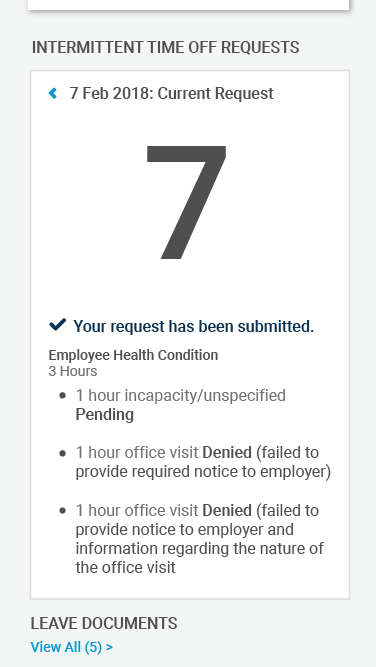

After clicking the Submit button he gets a confirmation message verifying that his request has been submitted (first mockup). He clicks the blue back button to get back to the main calendar view and now sees a blue dot under the 7th (second mockup). Just to double-check to make sure everything looks right, he taps the 7th and can now view his request (third mockup).
